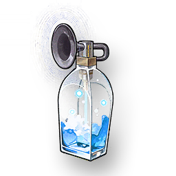

The singing section of the Song of the Empty Dawn
Missions

The sound material of the Song of the Empty Dawn sung by Qianxin.
The singer who performed at the theater turned her singing into sound materials. Due to the singer's own Forte, it can be used to soothe the spirit and enhance the Forte when played. The singing that once gave hope in confusion has now become her last echo in this world.